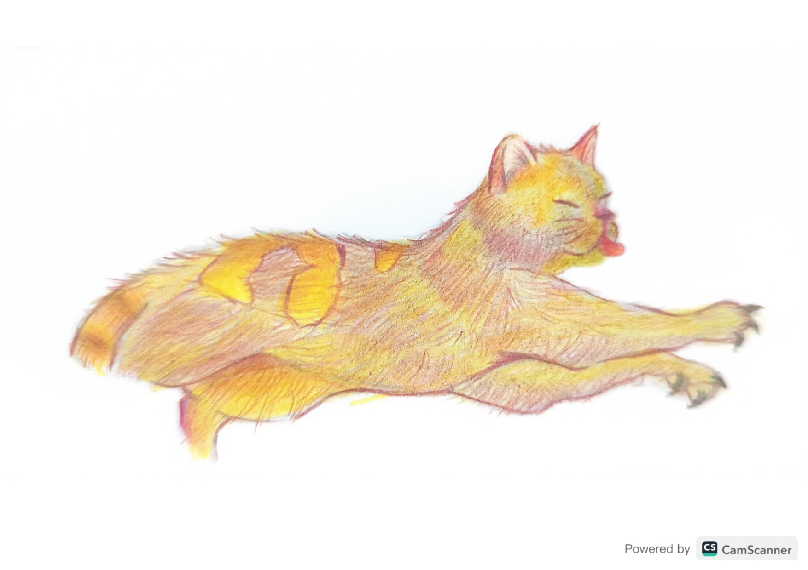

Coco (2019)
Ilustración a lápiz de color inspirada en mi gato Coco. Esta pieza captura su esencia en un momento de relajación y movimiento, utilizando tonos cálidos de amarillo y naranja para reflejar su personalidad vibrante. La técnica de lápiz de color permite texturas suaves y detalladas que resaltan su pelaje y expresión juguetona.